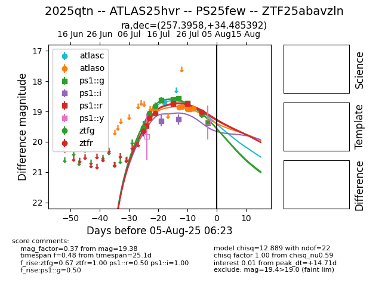

Target 2025qtn at 2025-08-05 07:33, see:
FINK: fink-portal.org/2025qtn
Lasair: lasair-ztf.lsst.ac.uk/objects/2025qtn
ALeRCE: alerce.online/object/2025qtn
TNS: wis-tns.org/object/2025qtn
YSE: ziggy.ucolick.org/yse/transient_detail/2025qtn
alt names
2025qtn (yse,tns)
ZTF25abavzln (ztf,fink)
ATLAS25hvr (atlas)
PS25few (panstarrs)
coordinates:
equatorial (ra, dec) = (257.3958,+34.48539)
galactic (l, b) = (57.6332,+34.99995)
photometry
last atlasc=18.68, atlaso=18.89, ps1::g=19.38, ps1::i=19.26, ps1::r=18.75, ztfg=19.11, ztfr=19.03
1 atlasc, 6 atlaso, 5 ps1::g, 2 ps1::i, 3 ps1::r, 4 ztfg, 4 ztfr detections
